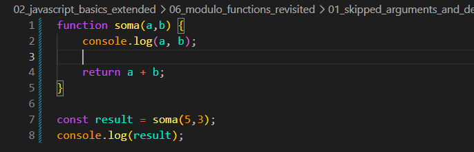
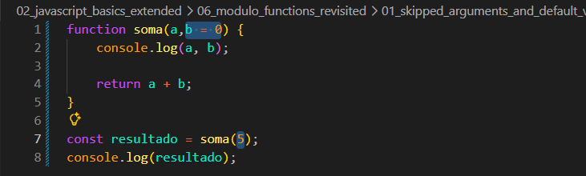
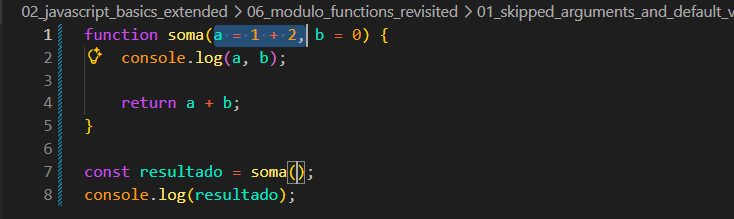

Skipped arguments and default values
Intro
Aqui usaremos o seguinte codigo de exemplo:

Nesse exemplo se passarmos apenas um argumento para esse funcao de dois parametros nos retornara um erro. Ira nos retornar NaN isso ocorre pois ao nao passarmos um argumento para nossa funcao, nosso valor se torna UNDEFINED e com isso a soma foi feita com o primeiro valor + UNDEFINED e com isso nos retorna NaN.
Para podermos evitar esse problema podemos simplemente passar um valor opcional para nosso parametro com isso evitamos o resultado de NaN, ficando da seguinte forma:

Alem de podermos passar valores opcionais, tambem podemos passar expressoes. Ficando da seguinte forma:
